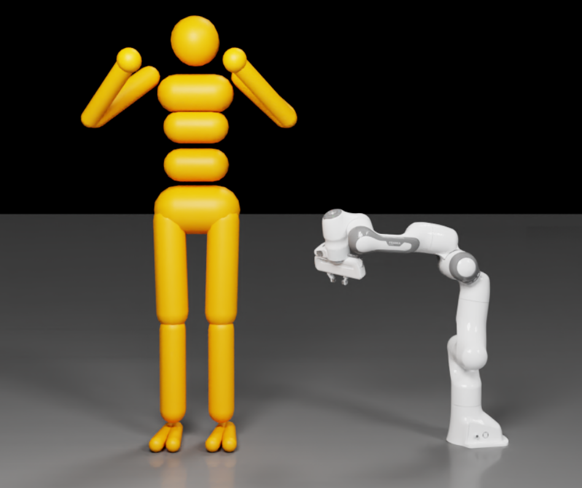
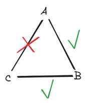

Articulations#
Articulations are the preferred way to simulate mechanisms made of jointed rigid bodies (robots, grippers, ragdolls). PhysX simulates them in reduced coordinates — the configuration is the root pose plus the joint angles rather than the world pose of each body — which gives zero joint error by design and handles large mass ratios between links well.
You turn jointed rigid bodies into an articulation by applying
UsdPhysics.ArticulationRootAPI (provided the joints are supported and loops are
resolved). A rigid body that is part of an articulation is called a link.
This page builds on Rigid Bodies and Joints. For stability tuning, refer to the Articulation Stability guide.
The Python examples on this page are fragments, not complete files. Each one
extends a script that already created a stage and registered the codeless PhysX
schemas, as shown in
Setting Up a USD Stage and a Physics Scene;
before using a fragment that refers to joint_prim or fixed_joint, define that
joint prim in the surrounding script.
Tree Structure#
An articulation must form a tree of links and joints. The tree is defined solely
by the joints’ body0/body1 relationships — the USD hierarchy has no effect on
the articulation structure (only on parsing, refer to
Articulation Root), so you can organize prims however you
like.
The following figures show two articulation trees, a ragdoll and a robotic arm, with their links and the joints that connect them:

Because the algorithm works in reduced coordinates, setting poses and velocities on non-root links is not supported and triggers a warning. Read link poses/velocities through the
ARTICULATION_LINK_*tensor types instead.
Floating Compared to Fixed Base#
Floating-base: the root link (and the whole mechanism) can move freely in space — for example a ragdoll.
Fixed-base: the root link is fixed to the world frame — for example a robot arm bolted to the ground.
Articulation Root#
Where you apply ArticulationRootAPI determines the articulation:
Fixed-base: apply it to the fixed joint that connects the base to the world, or to an ancestor of that joint. The fixed joint’s frames are ignored; its purpose is to mark the root link.
Floating-base: apply it to the root rigid-body link, or to an ancestor of it.
When the root is applied to an ancestor rather than a joint/link directly, the simulator determines the topology automatically: if any joint to the world is found the articulation is fixed-base (rooted at the world-connected body), otherwise it is floating-base (rooted at the link with minimal eccentricity). With automatic determination you cannot know the root beforehand, so applying poses/velocities to the root is only feasible after parsing.
Fixed-Base Example#
from pxr import UsdGeom, UsdPhysics, Gf
# Two links joined by a revolute joint.
for path in ("/World/link0", "/World/link1"):
prim = UsdGeom.Xform.Define(stage, path).GetPrim()
UsdPhysics.RigidBodyAPI.Apply(prim)
UsdPhysics.MassAPI.Apply(prim).CreateMassAttr(2.0)
revolute = UsdPhysics.RevoluteJoint.Define(stage, "/World/revoluteJoint")
revolute.CreateAxisAttr(UsdPhysics.Tokens.y)
revolute.CreateBody0Rel().AddTarget("/World/link0")
revolute.CreateBody1Rel().AddTarget("/World/link1")
# Fixed joint to the world, marked as the articulation root -> fixed-base.
fixed = UsdPhysics.FixedJoint.Define(stage, "/World/fixedJoint")
fixed.CreateBody0Rel().AddTarget("/World/link0")
UsdPhysics.ArticulationRootAPI.Apply(fixed.GetPrim())
For a floating-base articulation, apply ArticulationRootAPI directly to the
root link instead; initial pose and velocity can be set on the root link only.
The links_chain_sample.usda scene used by Hello World
and Tensor Bindings (deprecated) is a ready articulation to
experiment with.
Initial Joint State#
Each degree of freedom of an articulation joint has position and velocity. Author
initial values with the codeless PhysicsJointStateAPI (multiple-apply, instance
name = axis token). Without it, joints start at zero.
from pxr import Sdf
joint_prim.ApplyAPI("PhysicsJointStateAPI", "angular")
joint_prim.CreateAttribute("state:angular:physics:position", Sdf.ValueTypeNames.Float).Set(45.0)
joint_prim.CreateAttribute("state:angular:physics:velocity", Sdf.ValueTypeNames.Float).Set(180.0)
At runtime, read and write joint state in bulk through the
ARTICULATION_DOF_POSITION / ARTICULATION_DOF_VELOCITY tensor types (and root
state through ARTICULATION_ROOT_POSE / ARTICULATION_ROOT_VELOCITY) — the
preferred path for RL and control workloads. Refer to
Tensor Bindings (deprecated).
Articulation Joint Drive and Performance Envelope#
A drive (a PD controller, per axis) is added with UsdPhysics.DriveAPI exactly
as for regular joints (refer to Joints). Articulation joints
additionally support a performance envelope that models actuator limits,
applied per axis with the codeless PhysxDrivePerformanceEnvelopeAPI. It
requires DriveAPI on the same axis because it uses the drive’s maxForce:
from pxr import Sdf, UsdPhysics
drive = UsdPhysics.DriveAPI.Apply(joint_prim, UsdPhysics.Tokens.angular)
drive.CreateMaxForceAttr().Set(100.0)
joint_prim.ApplyAPI("PhysxDrivePerformanceEnvelopeAPI", "angular")
joint_prim.CreateAttribute("physxDrivePerformanceEnvelope:angular:maxActuatorVelocity", Sdf.ValueTypeNames.Float).Set(180.0)
joint_prim.CreateAttribute("physxDrivePerformanceEnvelope:angular:speedEffortGradient", Sdf.ValueTypeNames.Float).Set(2.0)
joint_prim.CreateAttribute("physxDrivePerformanceEnvelope:angular:velocityDependentResistance", Sdf.ValueTypeNames.Float).Set(0.5)
PhysX enforces two constraints that define a feasible operating region in the (joint velocity, drive effort) plane:
[ |driveEffort| \le maxEffort - velocityDependentResistance \cdot |jointVelocity| ] [ |jointVelocity| \le maxActuatorVelocity - speedEffortGradient \cdot |driveEffort| ]
where maxEffort is the drive’s maxForce. driveEffort is the sum of the PD
controller output and any user-defined joint effort. These drive-model parameters
are also exposed at runtime through the ARTICULATION_DOF_DRIVE_MODEL tensor type.
Distinguish
maxActuatorVelocity(envelope; clamps drive effort) frommaxJointVelocityonPhysxJointAxisAPI(below; clamps the joint velocity itself).
Articulation Joint Friction and Armature#
Per-axis friction, armature, and max joint velocity are set with the codeless
PhysxJointAxisAPI (multiple-apply, instance name = axis token). The friction
model combines Coulomb friction (staticFrictionEffort, dynamicFrictionEffort)
with viscous friction (viscousFrictionCoefficient):
from pxr import Sdf
joint_prim.ApplyAPI("PhysxJointAxisAPI", "angular")
joint_prim.CreateAttribute("physxJointAxis:angular:staticFrictionEffort", Sdf.ValueTypeNames.Float).Set(5.0)
joint_prim.CreateAttribute("physxJointAxis:angular:dynamicFrictionEffort", Sdf.ValueTypeNames.Float).Set(3.0)
joint_prim.CreateAttribute("physxJointAxis:angular:viscousFrictionCoefficient", Sdf.ValueTypeNames.Float).Set(0.1)
joint_prim.CreateAttribute("physxJointAxis:angular:armature", Sdf.ValueTypeNames.Float).Set(0.01)
joint_prim.CreateAttribute("physxJointAxis:angular:maxJointVelocity", Sdf.ValueTypeNames.Float).Set(10.0)
Armature is an artificial inertia added to the joint-space inertia (as if from an actuator) and helps stabilize an articulation.
staticFrictionEffortmust be>= dynamicFrictionEffort.These parameters apply only to joints that are part of an articulation.
Armature, joint friction, stiffness/damping, and limits are all also available in
bulk at runtime through the ARTICULATION_DOF_ARMATURE,
ARTICULATION_DOF_FRICTION_PROPERTIES, ARTICULATION_DOF_STIFFNESS,
ARTICULATION_DOF_DAMPING, and ARTICULATION_DOF_LIMIT tensor types.
Closed Loops#
Articulation joints alone cannot form a closed loop (for example A-B, B-C, and C-A). To close a loop, mark the loop-closing joint as excluded from the articulation so it is simulated as a regular joint. The following figure shows a three-link loop with the loop-closing joint marked:

fixed_joint.CreateExcludeFromArticulationAttr(True)
Excluding a joint is also how you connect two articulations to each other (for example a swappable manipulator on an arm). Loops are harder for the solver — if you hit instability, lower the timestep and refer to the Articulation Stability guide.
Mimic Joints#
Mimic joints couple the positions of two degrees of freedom of the same
articulation with a linear relationship, q_A + G * q_B + gamma = 0 (gear ratio
G, offset gamma). They implement gear and rack-and-pinion behavior specialized
for articulations, with native GPU acceleration (prefer them over the CPU-only
meta joints). Supported joint types:
Revolute joints — one rotational DOF; limits must be applied.
Prismatic joints — one translational DOF; limits must be applied.
Generic (D6) joints — all three translational DOFs must be locked and exactly one rotational DOF must be free (no limit, or limits with lower < upper); that free DOF becomes the mimic axis. The instance name of
PhysxMimicJointAPIselects which rotational axis (rotX,rotY, orrotZ) to couple.
Apply the codeless PhysxMimicJointAPI (multiple-apply, instance name = axis) to
the driven joint and target the reference joint. Mimic joints support
compliance (a spring-damper through natural frequency and damping ratio) to avoid
instability when a mimic constraint competes with a stiff drive or hard contact —
for example a gripper finger passively actuated through a mimic joint. A useful
tuning metric is the product of timestep and natural frequency: start near 1 and
increase the natural frequency until motion is no longer sluggish, keeping the
damping ratio at or slightly above 1.
Tendons#
Tendons create constraints within an articulation. There are two kinds:
Fixed tendons couple joint positions: the tendon length is a weighted sum (per-joint gear ratios) of coupled joint positions, driven toward a rest length with stiffness/damping, and optionally kept within a range by a limit stiffness. The referenced joints must follow the articulation topology. Author with the codeless
PhysxTendonAxisRootAPI/PhysxTendonAxisAPIon the joints.Spatial tendons create line-of-sight distance constraints between links (modeling cables, hydraulic actuators, or artificial muscles). A tendon is a chain of attachments — a root (carries the spring-damper parameters), any number of regular attachments (route the tendon, exert no force), and leaf attachments (enforce the distance constraint). Author with the codeless
PhysxTendonAttachmentRootAPI/PhysxTendonAttachmentAPI/PhysxTendonAttachmentLeafAPI.
Tendon properties (stiffness, damping, limit stiffness, limits, rest length/offset) are exposed at runtime through the fixed- and spatial-tendon tensor types — refer to Tensor Bindings (deprecated).
Inverse Dynamics Queries#
For control algorithms, ovphysx exposes read-only articulation inverse dynamics through
tensor bindings: the ARTICULATION_JACOBIAN, ARTICULATION_MASS_MATRIX,
ARTICULATION_CORIOLIS_AND_CENTRIFUGAL_FORCE, ARTICULATION_GRAVITY_FORCE, and
ARTICULATION_LINK_INCOMING_JOINT_FORCE tensor types (plus
ARTICULATION_CENTROIDAL_MOMENTUM for floating-base articulations). Refer to
Tensor Bindings (deprecated).
Limitations and Differences#
Each link has a single inbound joint; loops must be broken as above.
Not all USD joint types are supported (refer to the table in Joints).
Spherical articulation joints have pyramidal swing limits, not elliptical cones; distance limits (
distancetoken) are unsupported.An articulation joint supports a single linear DOF or up to three angular DOFs — consider this when using a D6 joint in an articulation.
Articulation joint limits are hard constraints (no
PhysxLimitAPIstiffness/ damping/restitution unless the joint is excluded from the articulation).The
breakForce/breakTorqueattributes are ignored; articulation joints cannot be removed at runtime, and cannot gain limits after the stage is attached (initialize with unreachable limits if you need them later).Articulation joints cannot be instanced.
For a one-to-one relationship between USD and PhysX joint parameters (limits, drive targets) when using the tensor API, set up articulations so their USD and PhysX topologies are identical.